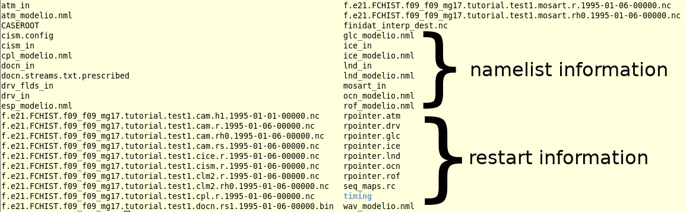

1: Control case: running with chemistry
Contents
1: Control case: running with chemistry#
Create, configure, build and run a case for one of these following configurations:
CAM-chem:
f.e21.FC.f09_f09_mg17.tutorial.test1with theFCnudgedcompset; orWACCM:
f.e21.FW.f09_f09_mg17.tutorial.test1with theFWhistcompset.
Run a simulation for 5 days, with daily instantaneous output of the variables: ‘PS’,’Z3’,’T’,’U’,’V’,’O3’. You are also welcome to output your own additional variables. Remember, F compsets have data ocean and data sea ice. Check your model output in your run directory.
Click here for hints
How do I output daily instantaneous variables?
Modify history stream 2 with namelist variable
fincl2Use namelist variables:
nhtfrq,mfiltFor more information, look at the chapter:
NAMELIST MODIFICATIONS -> Changing CAM namelist options
What is the resolution for FCnudged and FWhist?
Use resolution: f09_f09_mg17
Important! Check the newly generated namelist prior run
ls CaseDocs/*
atm_in
atm_modelio.nml
chem_mech.doc
chem_mech.in
cism.config
cism_in
cpl_modelio.nml
docn_in ice_in
docn.streams.txt.prescribed
drv_flds_in
drv_in
esp_modelio.nml
glc_modelio.nml
ice_modelio.nml
lnd_in
lnd_modelio.nml
mosart_in
ocn_modelio.nml
rof_modelio.nml
seq_maps.rc
wav_modelio.nml
atm_in: atmospheric namelist variables
chem_mech.in: chemical mechanism file
drv_flds_in: dry deposition variables, MEGAN variables (if used)
lnd_in: land namelist variables
…
Click here for the solution
Set environment variables#
Use the commands:
CAM-chem
set CASENAME = f.e21.FC.f09_f09_mg17.tutorial.test1
set CASEDIR = /glade/u/home/$USER/cases/$CASENAME
set RUNDIR = /glade/scratch/$USER/$CASENAME/run
set COMPSET = FCnudged
set RESOLUTION = f19_f19_mg17
or for WACCM
set CASENAME = f.e21.FW.f09_f09_mg17.tutorial.test1
set CASEDIR = /glade/u/home/$USER/cases/$CASENAME
set RUNDIR = /glade/scratch/$USER/$CASENAME/run
set COMPSET = FWhist
set RESOLUTION = f19_f19_mg17
Create a new case#
Create a new case with the command create_newcase:
cd /glade/work/$USER/code/my_cesm_code/cime/scripts/
./create_newcase --case $CASEDIR --res $RESOLUTION --compset $COMPSET
Change the job queue and account number#
If needed, change job queue and account number.
For instance, to run in the queue regular and the project number P93300642
cd $CASEDIR
./xmlchange JOB_QUEUE=regular,PROJECT=P93300642
This step can be redone at anytime in the process.
Setup#
From within the case directory, invoke case.setup with the command:
cd $CASEDIR
./case.setup
Build#
Perform an initial build within the case directory
> qcmd -- ./case.build
namelists (atm_in, ice_in, lnd_in, docn_in) will appear in the CaseDocs
subdirectory, as well as in your $rundir
Customize namelists#
Edit the file user_nl_cam and copy and paste the lines avgflag_pertap, mfilt, nhtfrq from CaseDocs/atm_in
avgflag_pertape = 'A', 'A', 'A', 'A', 'A', 'A', 'A', 'A', 'I’
mfilt = 1, 30, 120, 240, 240, 480, 365, 73, 30
nhtfrq = 0, -24, -6, -3, -1, 1, -24,-120,-240
and make changes
avgflag_pertape = 'A', ‘I', 'A', 'A', 'A', 'A', 'A', 'A', 'I’
mfilt = 1, 30, 120, 240, 240, 480, 365, 73, 30
nhtfrq = 0, -24, -6, -3, -1, 1, -24,-120,-240
fincl2 = 'PS','Z3','T','U','V','O3'
You can do this with a text editor.
You build the namelists with the command:
./preview_namelists
This step is optional as the script preview_namelists is automatically called by case.build and case.submit. But it is nice to check that your changes made their way into:
$CASEDIR/CaseDocs/atm_in
Set run length#
If needed, change the run length. If you want to run 5 days, you don’t have to do this, as 5 days is the default.
./xmlchange STOP_N=5,STOP_OPTION=ndays
Submit:#
./case.submit
Check your solution#
When the run is completed, look at the run files and history files.
(1) Find your model output in your run directory ($run_dir) after finished:
ls /glade/scratch/$USER/$CASENAME/run

(2) Check that your archive directory on cheyenne (the path will be different on other machines):
cd /glade/scratch/$USER/archive/$CASENAME/atm/hist
ls
As your run is only 5-day, there should be no monthly file (h0)
(3) Look at the contents of the h1 files using ncdump.
ncdump –h f.e21.FCnudged.f09_f09_mg17.tutorial.test1.cam.h1.2010-01-01-00000.nc